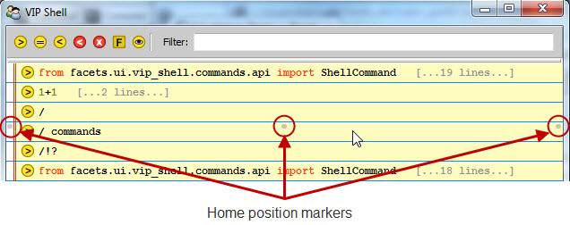
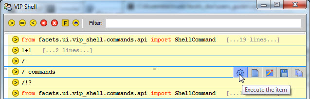

The history items portion of the shell user interface contains a history of all the commands you have executed in your shell session along with their associated results, outputs and exceptions.
Unlike the default Python interpreter shell, which only displays text, history items in the VIP Shell are objects which can display as text, graphics or even complete user interfaces. Being objects, they are also smart and support a wide variety of actions that manipulate them in various ways, as you shall soon see.
Each history item has associated with it an attribute called level of detail (LOD for short). Basically, the LOD setting controls how much of the information associated with the history item is displayed at any given instant, and has one of the following three values:
Each history item has its own individual LOD setting, so you have complete control over how much information is displayed on an item by item basis. There are a number of keyboard, mouse and toolbar controls that affect the level of detail setting for a single history item, or all history items at once. We’ll be covering these shortly.
History items also have a number of optional visual decorators that provide additional information about the items:
Each history item has an associated numeric id which uniquely identifies the item within your shell session. You can also use the id to programmatically refer to a history item from Python code executed in the shell using the special __ variable described previously.
History item ids are assigned sequentially starting from 0. They may or may not always appear sequentially in the history list however since it is possible to move, hide and delete items in the list.
When the id decorator is enabled, the item id appears at the beginning of the top line of each history item:
There are a number of ways to turn the item decorators on or off which we’ll be discussing shortly.
As mentioned previously, shell items can be of several different types (i.e. classes). While they all share many common characteristics and actions, each class also has its own unique characteristics, even if only a slightly different appearance or icon.
The following is a list of all standard shell history item types along with a brief description of their function and typical appearance:
The history item list supports a number of mouse commands that can be invoked when the mouse pointer is over a history item:
Each history item supports a number of actions available via keyboard shortcuts. The remainder of this section lists and describes each such shortcut. Please be aware that all shortcuts are pointer context sensitive, meaning that the keyboard action always applies to the history item immediately under the mouse cursor (referred to as the current item).
Note
Many of the actions are shared across all history item types, but a few are particular to a specific type. In those cases, the applicable type is shown in square brackets immediately following the shortcut key name.
Each history item has associated with it a number of contextual toolbars containing one or more tools for manipulating the item in some way. The toolbars are located on the left, right and center of each history item, but do not appear until you move the mouse pointer near the toolbar’s home position.
The home position for each toolbar is indicated by a small marker dot that appears when you first move the mouse pointer over the item:
As the mouse pointer approaches the toolbar’s home position, the associated toolbar gradually fades into view:
If you move the mouse pointer away from the home position, the toolbar fades out again.
However, if you move the mouse pointer close to the toolbar’s home position it locks the toolbar into place so that it does not fade out as you move the mouse pointer away. This is to allow you to select a tool not located near the toolbar’s home position. In this case, you will have to move the mouse pointer completely out of the toolbar to make it disappear again.
The VIP Shell provides a default set of tools for the three toolbars. However, you can use the shell’s options dialog to organize the toolbars as you like. If you remove all tools from a particular toolbar, its home position marker does not appear when you move the mouse pointer over a history item.
There are a core set of tools that apply to all history items. However, there also a number of tools that only apply to certain item types. The shell options Toolbar tab groups all of these item specific tools into a single category referred to as: Display custom item actions. The shell displays all custom item tools at the right end of whatever toolbar positions you select.
You invoke a tool simply by clicking on it. The core set of tools are as follows:
Performs the item’s execute action. The effect of execute varies between item types. For example, for a Command item the code associated with the item is re-executed. For a Python File item, an execfile is performed on the file.
If the item does not support the execute action, the tool appears greyed out in the toolbar.
In addition, the following history item type specific tools are also available:

Attempts to display the default Facets view for the demo or popup value defined by the module. This is intended mainly for use with Python source modules adhering to the Facets demo protocol.
If the module defines a demo, a View item for the demo’s default Facets view is created. If the module defines a popup, a popup view of the popup’s default Facets view is displayed.